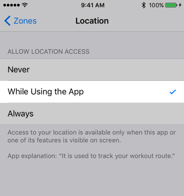

In Zones, to record the position information of the GPS, and then displayed as a route map .
If it does not appear , please check the following.
To record in the case of the following activity type.
Otherwise, it will not be recorded.
※ It does not record in the case of "Indoor"
How to check
If it is "Never", please change it to allow.

If iOS 10 or less or Zones ver1.3 or less, Route map is displayed only for workouts registered with Zones app.
If you have iOS 11 or later and Zones ver1.4.0 or later, you can check if there is route information in Apple Health.